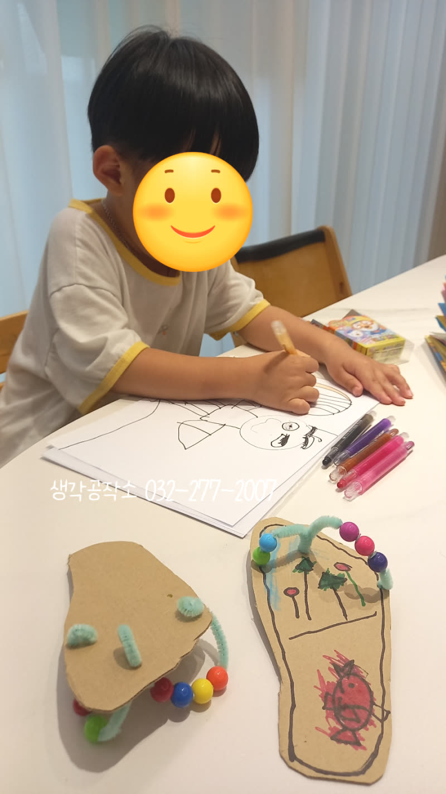
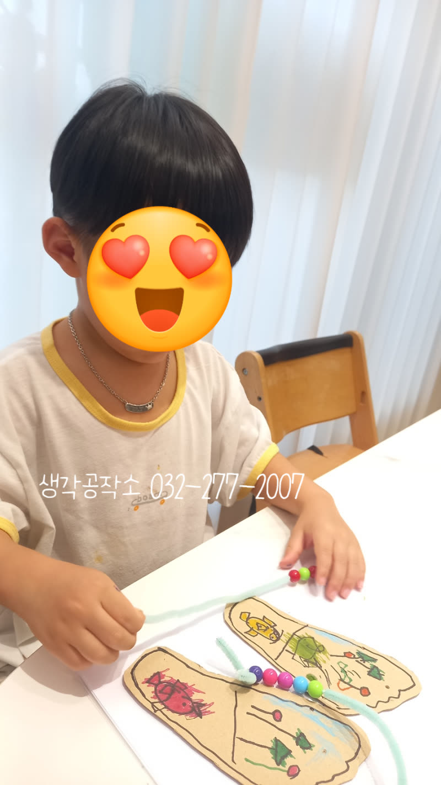
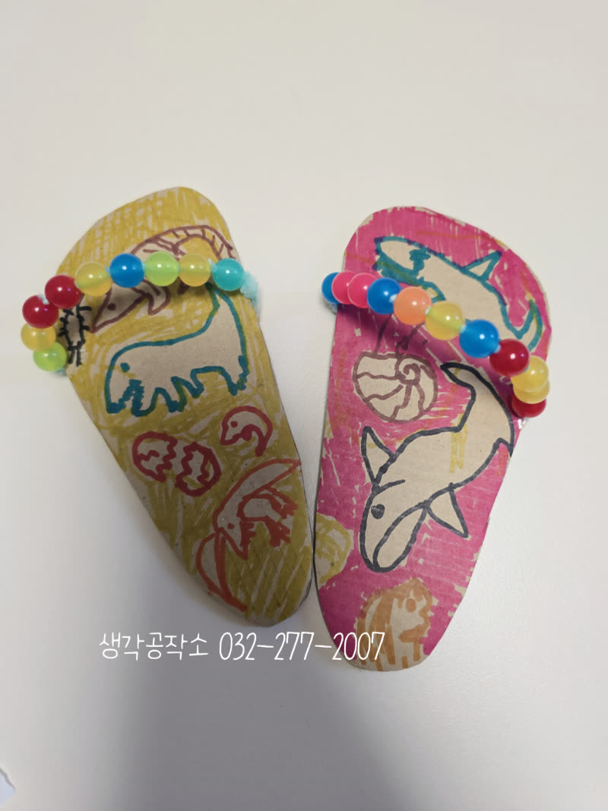
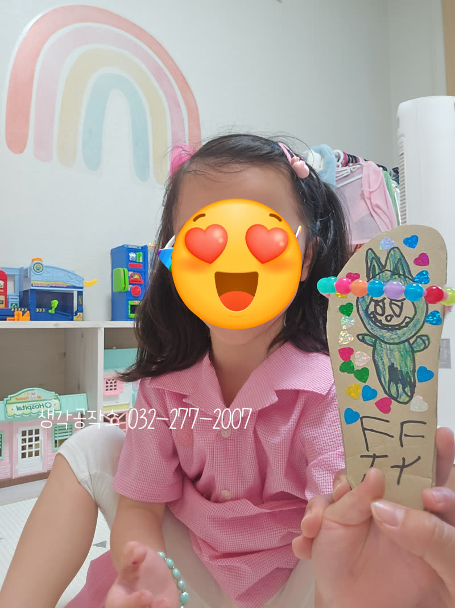
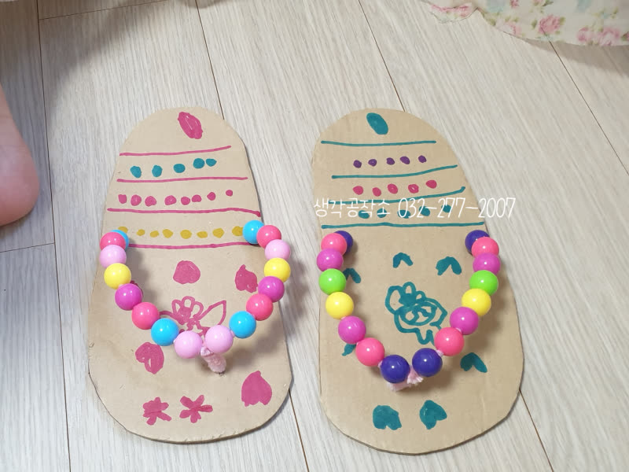
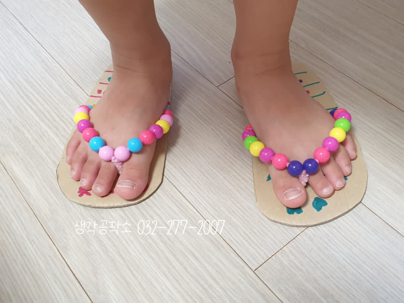
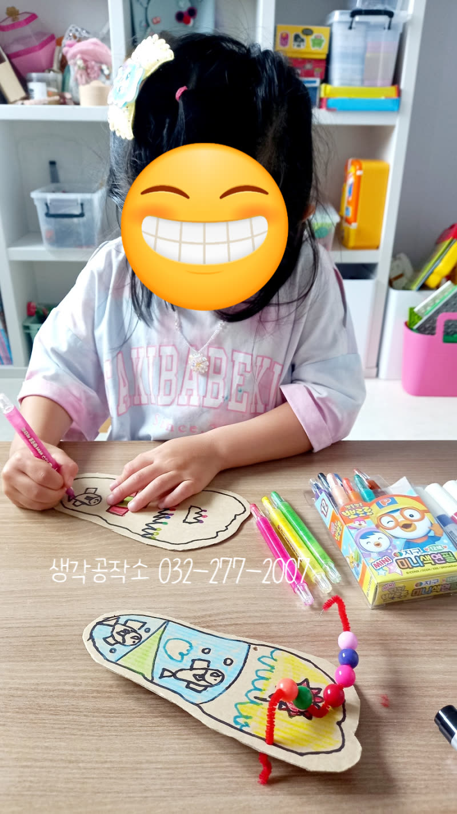
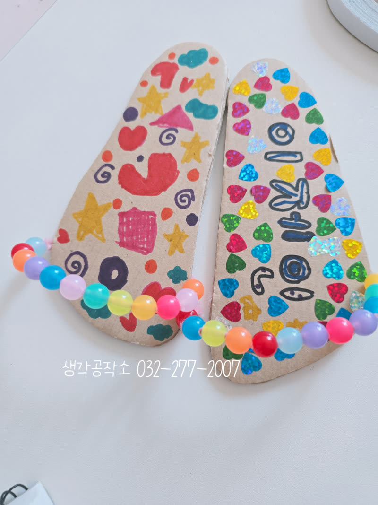
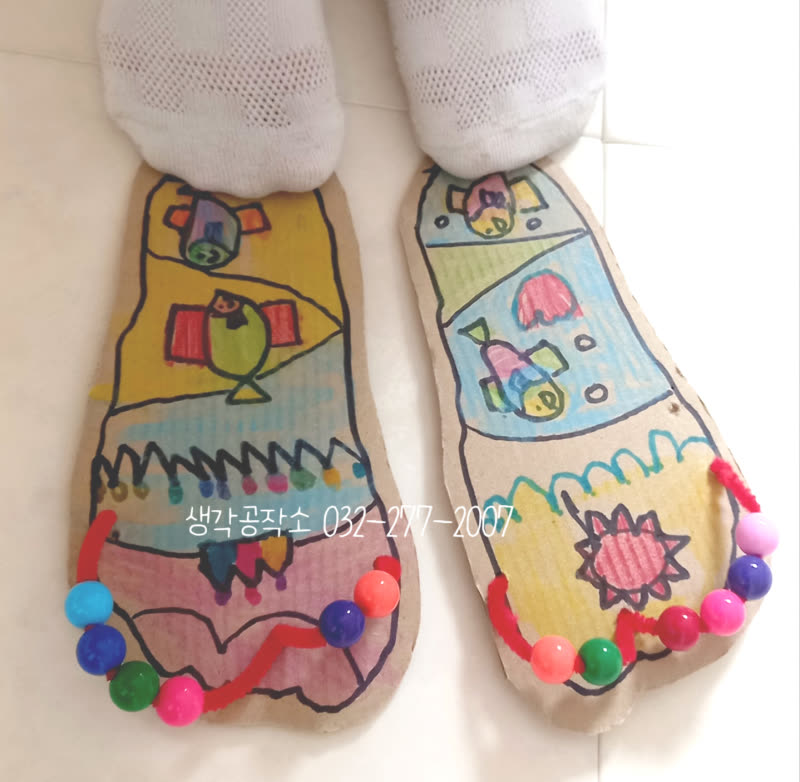

여름 필수템! 세상에 단 하나뿐인✨ 아이들표 커스텀 슬리퍼 만들기 💖
안녕하세요, 생각공작소입니다. :)
무더운 여름, 밝고 활기찬 8월을 맞아 아이들과 함께 특별한 시간을 가졌습니다!
'여름아 부탁해!'라는 주제로 🏖️
아이들의 창의력을 자극할 즐겁고 유익한 시간을 준비했는데요,
바로 '나만의 슬리퍼 만들기' 프로그램입니다! 🩴✨



아이들은 먼저 여름에 관한 동화를 들으며
시원한 상상 속으로 빠져들었습니다.
이야기를 통해 무한한 상상력과 창의력을 발휘하며
자신만의 여름 슬리퍼를 머릿속에 그리기 시작했습니다.
"여름 해변의 모래밭을 이 슬리퍼 신고 걸어보고 싶어!",
"바다에 있는 물고기 슬리퍼 만들래!"
하는 아이들의 이야기에 여름 바다가 눈앞에 펼쳐지는 듯했습니다. 🏖️



슬리퍼의 기본이 되는 발 모양 본을 뜨는 시간에는
여기저기서 웃음꽃이 터져 나왔습니다.
"하하하하하하! 발이 간질간질해서 너무 웃음이 나와요!"라며
몸을 배배 꼬는 아이들의 모습이 너무나 사랑스러웠습니다.
자신의 발 모양을 따라 또박또박 한 선 한 선
정성을 다해 그리는 모습은 정말 대견했습니다.
'내 발 크기', '내 발 모양이에요!'라고 외치며
자신만의 슬리퍼에 대한 애착을 보였답니다. 👣💕



아이들은 본을 뜬 슬리퍼 위에 자신만의 여름 이야기를 담기 시작했습니다.
빨간 구슬, 파란 구슬, 노란 구슬 등
여러 색깔의 예쁜 구슬을 실에 꿰는 재미도 쏠쏠했습니다.
알록달록 구슬과 나무, 꽃, 물고기 그림들이 슬리퍼를 환상적으로 꾸며주었습니다. 🌳
아이들의 그림 솜씨와 상상력에
"우와, 정말 멋져요!", "최고다!"라는 칭찬이 절로 나왔습니다.
아이들이 만든 슬리퍼를 보고 있으면
보기만 해도 행복해지는 기분이 들었습니다.😊
'나의 발 모양이라서 나만의 소중한 슬리퍼지요!'라는 아이들의 말처럼,
스스로 만든 슬리퍼는 아이들에게 큰 자부심과 성취감을 안겨주었습니다.
이번 슬리퍼 만들기 활동을 통해 아이들은 손의 소근육을 발달시키고,
색채 감각과 그림 실력을 키우며 창의력과 상상력을 마음껏 발휘했습니다.
인천시 어디서나! 생각 쑥쑥! 행복 쑥쑥!
우리 아이들의 즐거운 성장을 위해 저희 생각공작소가 든든한 밑거름이 되도록,
아이들의 오감을 깨우는 행복한 경험들을 계속 만들어가겠습니다! 🙌
📞 생각공작소 032-277-2007
인천시 남동구, 연수구, 미추홀구, 서구 에 위치한 #심리상담센터 로
전연령층과 전직종을 대상으로 #심리상담 을 도와주는 곳입니다. :)
더욱 자세한 정보는 문의를 통해 확인해주세요 :)